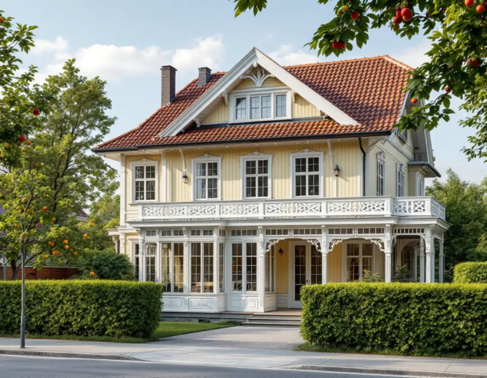
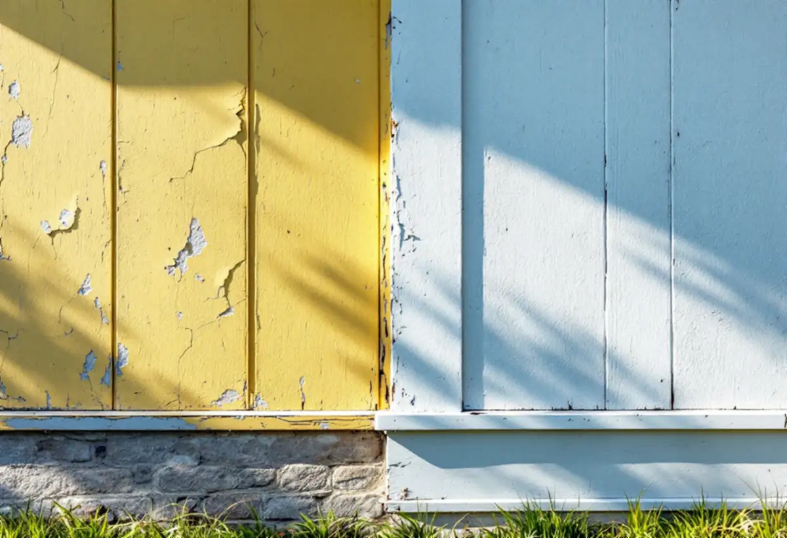

Platsbesök
Varje fasad bedöms för sig: skador, färgtyp och nedsmutsning.
En trävilla i Bromsten eller Flysta behöver sällan målas om på alla fyra sidor samtidigt. Söderfasaden och snickerierna slits fortare än norrsidan, och ibland räcker det att tvätta och bättra. Geal Entreprenad AB målar om fasader på villor och radhus i Spånga och bedömer varje fasad för sig innan omfattningen bestäms.

Stadens strategi för småhusområden, Varsam, beskriver hur små stationssamhällen uppstod när järnvägen byggdes ut, och hur några på 1910-talet fick status som municipalsamhällen med egen administration, bland annat Spånga. I strategins tabell räknas Bromsten, Flysta, Sundby och Solhem till villastäderna.
Villastäderna var privat organiserade, och Varsam beskriver en brokigare bebyggelse än i de egnahemsområden staden planerade. Trä var det dominerande fasadmaterialet, även om puts förekom, och glasverandor, takkupor, snickarglädje och färgsättning ger en variation som syns än i dag.

Riksantikvarieämbetet påpekar att bättringsmåleri kan vara lämpligt även utomhus, eftersom vissa byggnadsdelar slits snabbare än andra. Söderfasader behöver målas om oftare än norrfasader, och fönster och delar av dem oftare än fasaden runt omkring. Mild rengöring och bättring av skadade partier är enligt myndigheten ett utmärkt sätt att förlänga livslängden på en linoljefärg som i övrigt är hel.
Därför går vi igenom fasaderna en och en. Är norr- och östsidan i gott skick kan det räcka att tvätta dem och bättra skadorna, medan söder- och västsidan och snickerierna målas om helt. Det ger en lägre kostnad nu och en jämnare underhållscykel framåt.
Riksantikvarieämbetet varnar för att måla över äldre färgtyper med moderna material, eftersom nästa underhåll då ofta blir komplicerat och en återgång kan kräva att all färg tas bort. Har en villa målats om flera gånger kan det vara svårt även för en fackman att säga vilka färgtyper som använts. Brister i underlaget och ett tidigare felaktigt val av färgtyp rättas enligt myndigheten inte till genom att lägga på ytterligare färgskikt.
Vi tar därför prov på hur färgen sitter och vad den består av innan något beställs. Myndigheten påpekar också att tidigare kulörer i många fall kan hittas genom att blottlägga äldre färglager, och att det är bra att spara några obehandlade provytor på undanskymda ställen som dokumentation för nästa gång.
Ska färgen bort på större ytor avråder Riksantikvarieämbetet från att sandblästra träfasader, eftersom underlaget lätt skadas. På mindre ytor kan färgen tas bort med varmluft, som är skonsammare än bränning, men även då krävs försiktighet eftersom vissa material har låg antändningstemperatur.
Spikar som krupit upp slås in och lösa partier skrapas till fast underlag innan grundning. Om fasadmaterial och reparationer i Spånga kan du läsa under fasadrenovering i Spånga.
I Varsam-tabellen är Solhem markerat som kulturhistoriskt värdefull miljö, till skillnad från Bromsten, Flysta och Sundby. Stockholms stad skriver att byte av kulör räknas som fasadändring och att utökad lovplikt gäller i särskilt kulturhistoriskt värdefulla områden.
Ska kulören ändras kontrollerar vi Stadsmuseets klassificeringskarta och detaljplanen för fastigheten först. Om måleri i Spånga i övrigt kan du läsa under målare i Spånga.
Varje fasad bedöms för sig: skador, färgtyp och nedsmutsning.
Vi föreslår vad som bättras och vad som målas om helt.
Fasad för fasad, med snickerier för sig.
Ändras kulören kontrolleras karta och detaljplan.
Tvätt, skrapning, bättring och strykning i samma färgtyp.
Vi går igenom fasaderna och lämnar uppgift om färgtypen.
Utvändig målning av ett småhus som du äger och bor i räknas som rotarbete hos Skatteverket. Avdraget gäller arbetskostnaden, inte färgen.
Avdraget är högst 30 procent av arbetskostnaden, högst 50 000 kronor per person och år och högst 75 000 kronor tillsammans med rutavdrag. Material och resor ger inget avdrag. Geal drar avdraget direkt på fakturan.
Hur många fasader som målas om helt, skador och skrapning, färgtyp, snickerier och ställning. Efter ett gratis platsbesök får du ett skriftligt kostnadsförslag.
Fasad, fönster och invändig målning.
Målare i Stockholm →Takbyte, takbesiktning och plåtarbeten.
Takläggare i Spånga →Solhem, Bromsten, Flysta och Sundby.
Takrenovering i Spånga →Solhem, spåren och de stora tomterna.
Attefallshus i Spånga →Äldre villor, duschplats och bostadsanpassning.
Badrumsrenovering i Spånga →Riva och bygga nytt hus.
Byggföretag i Spånga →Trävillor och gruppbyggda radhus.
Fasadrenovering i Spånga →Villor, verandor och nya öppningar.
Fönsterbyte i Spånga →Villorna i Solhem.
Fönsterrenovering i Spånga →Massivt, lamell, fanér eller laminat.
Golvläggare i Spånga →Breda originalgolv och patina.
Golvslipning i Spånga →Solhem, villastäder och kök i flera lager.
Köksrenovering i Spånga →Solhems färgskala och villorna kring stationen.
Målare i Spånga →Villatak, rännor och stuprör.
Plåtslagare i Spånga →Väggar, vindar och verandor i villastäderna.
Snickare i Spånga →Solceller, radarn och Solhem.
Takbyte i Spånga →Tapet som passar husets tid.
Tapetsering i Spånga →Villastäderna, tomterna och gatan.
Tillbyggnad i Spånga →Villastäderna, stommen och ventilationen.
Totalrenovering i Spånga →